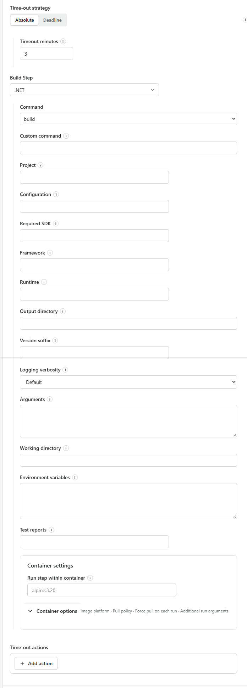

Run with timeout
Wraps one other step with a time limit. When the time is up, the actions you choose run.
When to use it
Use it for a step that can hang, such as a device-kit test or a store upload, so it cannot hold an agent for hours.
How to set it up
- Open the build configuration and click Settings › Build Steps.
- Click Add build step. Type
Run with timeoutin Filter step types if you like, then click the Run with timeout tile (group Other). - Type a Step name, for example
Devkit tests. - Fill in the fields described below.
- Optional: set Execute step, Conditions and Retry on failure. See The steps list and the step editor.
- Click Save.

Every field
| Field | What it does | Default | Example |
|---|---|---|---|
| Time-out strategy | When the step counts as too slow. Absolute: after a number of minutes. Elastic: a percentage of the mean duration of the last non-failing builds. Likely stuck: many times longer than previous builds. No Activity: no log output for a number of seconds. Deadline: a time of day. | Absolute | No Activity |
| Timeout minutes (Absolute) | Minutes before the step is stopped. | Empty | 45 |
| Timeout seconds (No Activity) | Terminate when there has been no log output for this many seconds. | Empty | 300 |
| Deadline time, Deadline tolerance in minutes (Deadline) | The time of day by which the step must be done, and how many minutes more it may take. | Empty | 06:00, 5 |
| Timeout as a percentage of recent non-failing builds, Number of Builds, Timeout minutes, Timeout minutes as the shortest timeout (Elastic) | Elastic limit: the percentage of the mean duration, how many builds to look at, a default when there is no history, and the shortest allowed limit. | Empty | 150, 3, 60, 10 |
| Build Step | The step to run under the limit. Pick any step type. | None | Command Line |
| Time-out actions | What to do on a time-out: Abort the build, Fail the build, Abort and restart the build (with Maximum restarts), Writing the build description (with a Description) or Perform BuildStep (with Ignore failure of the build step and Create a launcher for this build step). | Abort the build | Fail the build |
A worked example
Stop the PS5 device-kit test if it prints nothing for five minutes. Step name Devkit tests, Time-out strategy No Activity with 300 seconds, Build Step a Command Line step that runs the tests, Time-out actions Fail the build.
What you see when it runs
The wrapped step runs as usual. When the limit is reached, the log says the step timed out and your actions run.
Problems and fixes
| Problem | What to do |
|---|---|
| The step never times out | Check that the strategy has its number filled in, and that the build step is set. |
| The build is aborted but you wanted only a note | Use Writing the build description instead of Abort the build. |